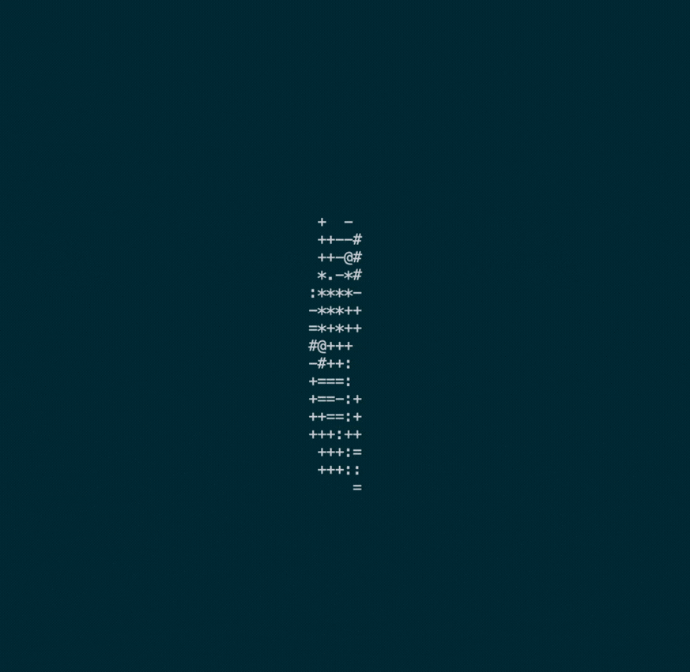
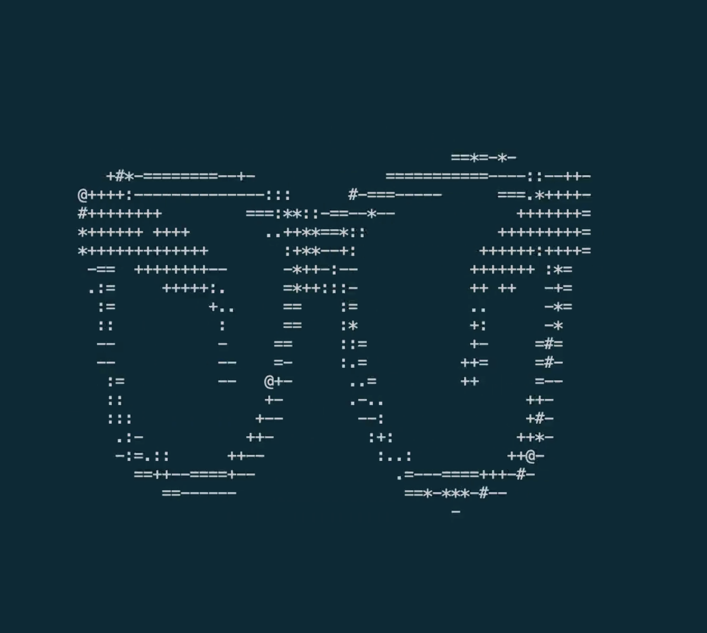
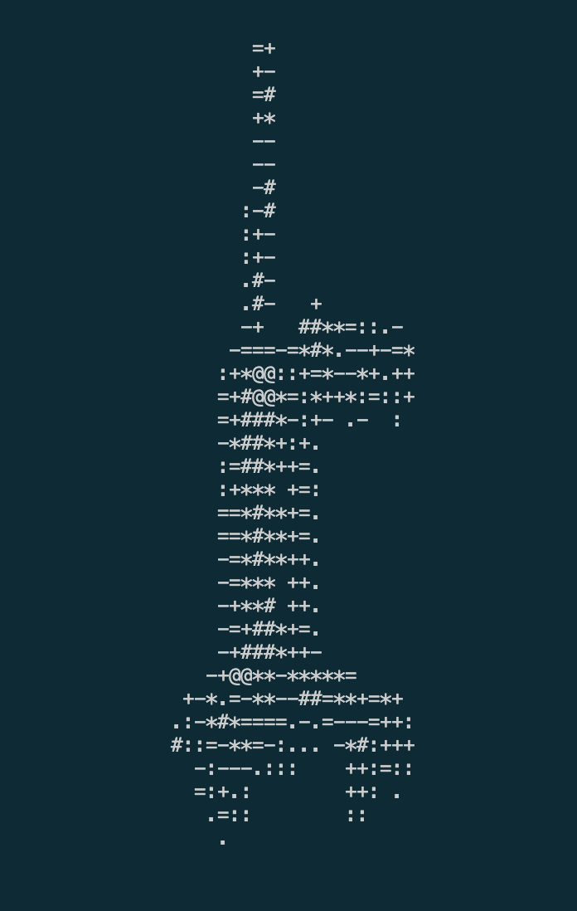

3D ASCII Renderer



A 3D ASCII Visualization Tool using multiple concurrent worker processes that communicates results back to the parent through pipes in C. It takes in a 3D model file in either the tri or quad-face .obj format and outputs a frame-by-frame 3D rotation of the object model in ASCII representation directly to the terminal. [CSC209 Final Project]
View Project ← Back to projects